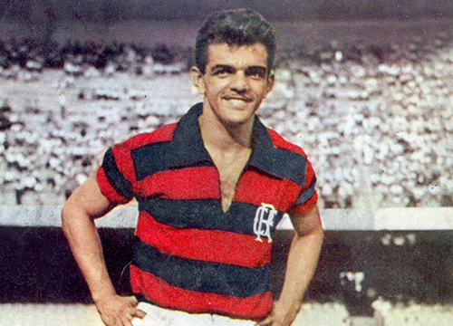

O Futevôlei é uma modalidade de esporte coletivo de areia praticadas em quadras montadas nas orlas, esporte muito parecido com o vôleibol. O esporte teve sua origem nas praias cariocas no Rio de Janeiro, cresceu dentro do Brasil, assim como na Europa, Ásia e Estados Unidos
HISTORIA DO FUTEVÔLEI
A criação do futevôlei começou com a tentativa de burlar uma lei que existia nas praias cariocas.
Nos anos 60, a prática do futebol foi proibida nas praias do Rio de Janeiro, sendo assim todos os esportes que não utilizassem rede e um espaço seguramente delimitado, não poderia ser praticado no local.
Os Amantes da pratica de futebol de areia, com a proibição imaginaram esse esporte com quadra e rede, com delimitaçoes assim como a lei permitia, e essa imaginação levou a eles começarem a jogar futebol em quadra do voleibol de praia(esporte permitido).
Quem começou a lapidar a nova modalidade foi Tatá, Ralph, Luiz Fernando "tananan", Airton, Adilton Brandão, Orlando "Pingo de ouro", Feitosa, Francês, Carlson Gracie, Zé e Chico Brandão, Betão e Ricardinho.
Aos poucos,essa prática ganhou adaptações, incluindo os jogadores de peso do futebol de campo brasileiro da época, Dida e Vavá.
Jogador Vavá

Jogador Dida
REGRAS
Atualmente, essa modalidade é uma prática desportiva, tem estrutura e regras claras como vemos a seguir:
- A dimensão da quadra é de 18 x 9 metros, cortada por uma rede exatamente ao meio. Além disso, deve haver uma área livre de no mínimo 3 metros além das linhas de demarcação e 8 metros acima do solo. Em competições oficiais, as delimitações da zona livre são ainda mais amplas: cinco metros além da linha lateral, oito metros além da linha de fundo e doze metros acima do solo;
- O piso da quadra deverá ser sempre de areia, preferencialmente bastante nivelada e sempre livre de objetos cortantes que podem machucar os atletas. Oficialmente, a areia do piso deve ser do tipo fina;
- A rede mede 9,5 metros de comprimento por 1 metro de largura, feita por malha quadriculada de 10x10 centímetros. Deve ser colocada a uma altura de 2,20 metros. Uma curiosidade é que se permitem propagandas afixadas na rede durante as partidas;
- A bola utilizada tem a circunferência entre 68 e 70 centímetros e deve ser cheia com pressão entre 0,56/0,63 kg/cm. E é importante que, em um mesmo jogo, todas as bolas utilizadas apresentem exatamente as mesmas características;
- As partidas de futevôlei podem ser disputadas em duplas (dois jogadores em cada lado da quadra) ou em times de cinco pessoas (do qual um deles é reserva);
- Os uniformes oficiais incluem camiseta ou camisa de malha e short ou calção, que podem ou não ser numerados – 1 e 2, para dupla, e de 1 a 5, para o grupo;/
- O jogo é iniciado após o primeiro saque, que se dá em função do apito do árbitro. O saque deve ser executado por meio do toque com os pés e deve atravessar a rede por cima, chegando à área da quadra adversária. O local para o saque é chamado “zona de saque” e abrange desde a linha demarcatória de fundo até o limite da zona livre;
- As linhas de demarcação são consideradas área de jogo. Portanto, caso a jogada adversária faça com que a bola caia sobre a linha demarcatória, o ponto é válido para o adversário;
- Assim como no voleibol, a bola deve ser tocada entre uma e três vezes antes da devolução à equipe adversária, se um jogador der dois toques na bola é erro e ponto para a dupla adversária, se um jogador tocar na rede é erro e ponto para a dupla adversária.
A bola pode ser passada para a quadra adversária no primeiro, segundo ou terceiro toque.
O toque pode ser realizado com qualquer parte do corpo, com exceção dos braços, antebraços e mãos;
O monte do saque fica fora da quadra atrás da linha da marcação.
Se um ou dois jogadores abandonar a partida antes do termino da mesma, independente do placar, a vitória é da dupla adversária.
Se o jogador passar a bola para a quadra adversária por fora da rede é erro e ponto para a dupla adversária.
Bola no braço é considerada mão, portanto é erro e ponto para a dupla adversária.
A bola é considerada fora quando toda a sua dimensão ultrapassa e não mexe a linha da marcação.
- Geralmente, as partidas são compostas por três sets, com 15 pontos cada.
Fundamentos e técnicas do Futevôlei
São eles:
1. Saque
Meta:Jogar a bola para a quadra do adversário passando por cima da rede e dificultando a recepção.
Como fazer:Realizado com o pé, colocando a bola sob um pequeno monte de areia, variando a região do pé em que se chuta: lado interno, parte externa, “bico”, “peito do pé”. O saque pode ser feito com ou sem efeito na bola, acertando a bola com um chute “seco”.
2. Recepção
Meta:Executar o passe para o parceiro para que este consiga fazer o levantamento ou ataque de forma mais fácil.
Como fazer:Com qualquer parte do corpo, exceto mãos e braços, claro. A escolha de como será feita a recepção, com o peito, cabeça, ombros, coxa ou pé, vai depender de como vem o saque.
3. Levantamento
Meta:Fazer o passe com precisão, deixando o parceiro em boas condições para fazer o ataque e fazer o ponto.
Como fazer:Executada com a região que for mais propícia no momento.
4. Ataque
Meta:Lançar a bola na quadra oposta para marcar o ponto ou então dificultar a defesa.
Tipos de ataque no Futevôlei:
Shark: O jogador rebate a bola com o pé, a bola tem que passar acima da rede, como se fosse uma cortada com os pés.
Forte: Usa a força ao rebater a bola , aumentando a velocidade.
Curto: A famosa pingada, fazendo que a bola caia rente á rede do adversário.
Longo: O jogador utiliza a força e tenta colocar a bola no fundo da quadra dos adversarios.
Diagonal: Rebate a bola curta ou longa, na diagonal.
Paralelo: Tenta rebater a bola á linha lateral de marcação.
5. Defesa
Meta:Evitar que a bola toque o chão da suaa quadra quando a dupla rival executa o ataque.
Como fazer:Os seguintes fatores devem ser levados em conta para uma boa defesa:
Posicionamento correto da dupla na quadra.
Antecipação da jogada, observando o adversário e prevendo (antevendo) como ele irá atacar, assim você decide melhor onde e como fazer a defesa.
Estratégias e Táticas do Futevolei para defesa
As estratégias e táticas para a defesa, começa com uma divisão da quadra por Zonas de Maior Incidência da bola cair. A fim que a compreensão do futevôlei seja mais facilitada.
Quadra de Futevôlei
Retangulo no centro em laranja:- zona protegida pelo bloqueio, simples ou duplo
Retangulo em verde:- zona de maior incidência de bolas "largadas";
Retangulo em azul:- zona de maior incidência de bolas atacadas com força;
Retangulo em amarelo:- zona de maior incidência de bolas atacadas com objetivo estratégico no bloqueio;
Quadrado em vermelho:- zona de maior incidência de bolas atacadas por falha do bloqueio.
Na imagem acima é apresentado uma divisão da quadra, a incidencia de tempo das bolas variam:
-Local em que a bola for lançada, a caracteristica dos jogadores individualmente, a 'emoção' do jogo/jogadores.
Com essas váriações são necessários ajustes de time para time, tentando uma adequeção para o sistema defensivo para levar vantagem em cima do outro time. Para ter um ajuste mais rápido é preciso ter uma adequação de posicionamento da defesa e bloqueio.
Categorias que disputam o Futevôlei
O esporte é disputado por sete categorias, Iniciante, Misto Iniciante, Série C, Série B, Misto Aberto, Profissional Masculino e Profissional Feminino.